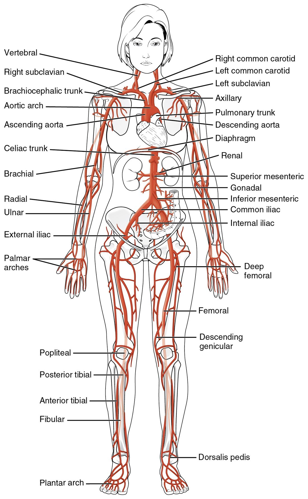
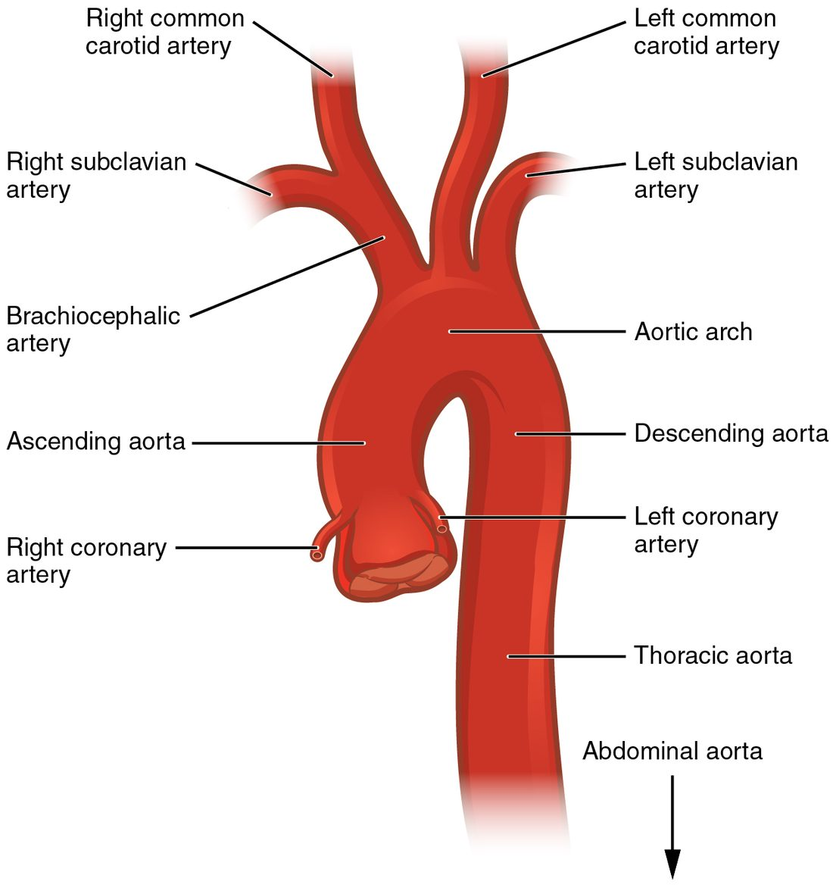
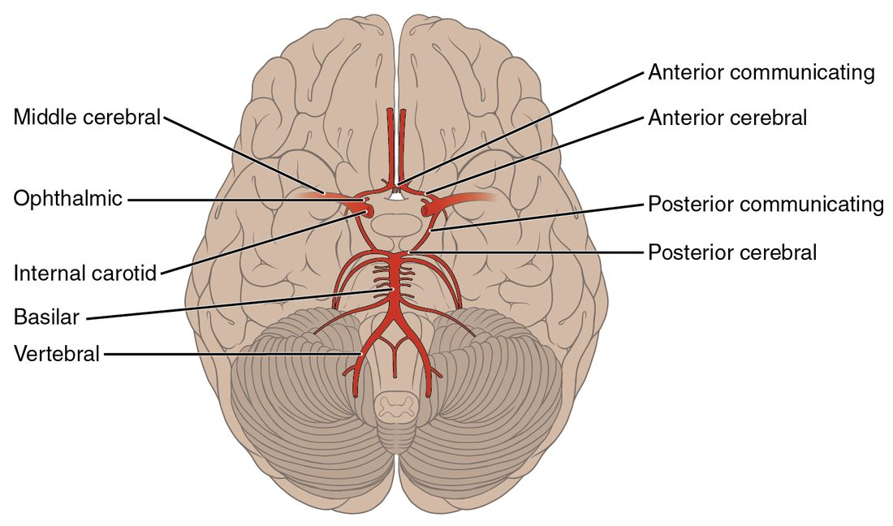
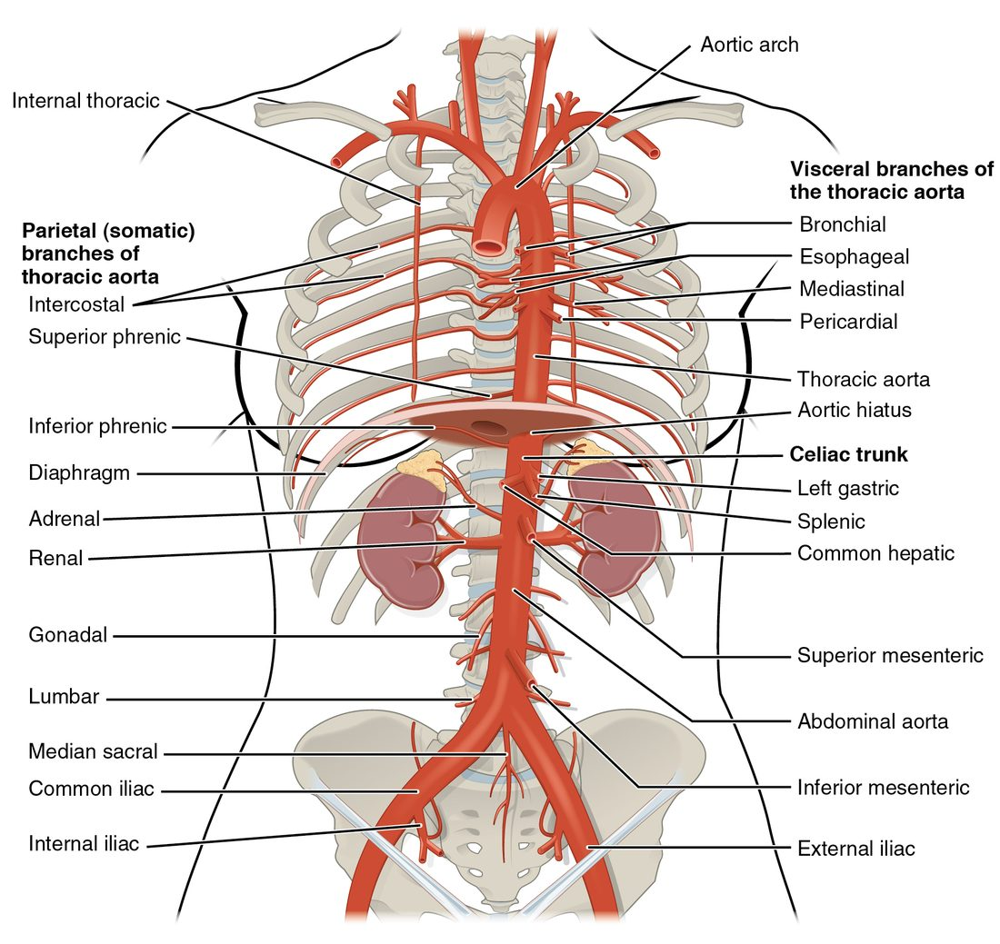
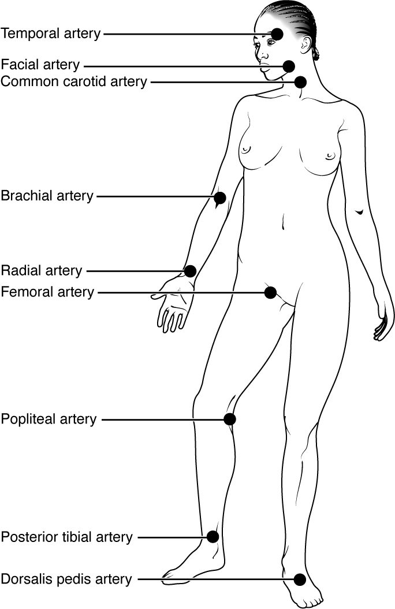

Every major artery of your body is a branch, or a branch of a branch, of one vessel: the aorta. This page walks the tree from the heart outward, the way blood travels, so the major arteries of the body form one connected diagram in your head rather than a list. You will follow the aorta through the chest and abdomen, up into the head and neck, around the base of the brain, and out to the hands and feet. Then you will find the places where you can feel these arteries pulse under your fingers, which is where this anatomy meets patient care.
One tree, named by region
Put two fingers on the thumb side of your wrist. The beat you feel is the radial artery. Blood reaches it by a fixed route: left ventricle, aorta, a branch to the right or left arm, down the arm, and into the forearm. Every artery on this page can be traced the same way.
Three habits make the names easy:
- Most arteries are named for the region or bone they run beside. The brachial artery runs in the arm (brachi- = arm). The femoral artery runs along the femur. The radial and ulnar arteries run beside the radius and ulna.
- One artery can change its name without branching. The same tube is called the subclavian, then the axillary, then the brachial artery as it crosses landmarks. Nothing happens to the blood at those points; only the name changes.
- Many arteries come in pairs, one on each side. The gut arteries are the main exception: they leave the front of the aorta singly.
Figure 1 shows the whole tree. Keep it in view as you read.

The parts of the aorta
The aorta (aort- = lifted up) is the largest artery in your body, about 2.5 cm across where it leaves the heart. It is an elastic artery. You met it as one of the great vessels. It has named parts, set by where it runs (Figure 2):
- Ascending aorta. The first few centimeters, rising from the aortic valve. Its only branches are the right and left coronary arteries, which leave just above the valve cusps and supply the heart muscle.
- Aortic arch. The aorta curves up, backward and to the left over the root of the left lung, like the handle of a cane. Three large branches leave the top of the arch (next section).
- Descending aorta. From the end of the arch, at about the level of the fourth thoracic vertebra, the aorta runs down in front of the spine. It has two named parts:
- The thoracic aorta (thorac- = chest) runs through the chest. It gives off small branches to the ribs and chest wall, the esophagus, the airways and the covering of the heart.
- The aorta passes through the diaphragm at the aortic hiatus (hiat- = gap), an opening at about the level of the twelfth thoracic vertebra. Below the diaphragm it is the abdominal aorta.
The abdominal aorta ends at about the level of the fourth lumbar vertebra, near your navel, where it splits into the two common iliac arteries.

The three branches of the aortic arch
From right to left, three arteries leave the top of the arch:
- The brachiocephalic trunk (brachi- = arm, cephal- = head), also called the brachiocephalic artery. It is short, about 4 cm, and splits behind the right sternoclavicular joint into the right subclavian artery (sub- = under, clavi- = collarbone) and the right common carotid artery.
- The left common carotid artery, straight off the arch.
- The left subclavian artery, straight off the arch.
So the two sides differ. On the right, the arm and the neck share one trunk. On the left, they arise separately. There is no left brachiocephalic trunk.
| Right side | Left side | |
|---|---|---|
| First branch from the aortic arch | Brachiocephalic trunk | Left common carotid artery |
| Origin of the common carotid artery | Brachiocephalic trunk | Aortic arch directly |
| Origin of the subclavian artery | Brachiocephalic trunk | Aortic arch directly |
| Number of arch branches serving that side | One | Two |
Arteries of the head and neck
Two pairs of arteries carry blood to your head: the carotid arteries in front and the vertebral arteries at the back.
The carotid arteries
Each common carotid artery (from a Greek word meaning "to stupefy", because squeezing it was thought to make a person pass out) runs up the side of the neck beside the trachea. Just below the angle of the jaw, at about the level of the fourth cervical vertebra, it splits in two:
- The external carotid artery supplies the outside of the skull: the face, scalp, jaw, teeth, tongue and the front of the neck. Its branches include the facial artery, which crosses the lower edge of the jaw, and the superficial temporal artery in front of the ear.
- The internal carotid artery gives no branches in the neck. It enters the skull through a canal in the temporal bone and supplies most of the cerebrum and the eyes.
Where the internal carotid begins, its wall bulges slightly. This bulge is the carotid sinus (sinus = a hollow or pocket). Its wall is thin and packed with stretch-sensitive sensory receptors. When pressure inside the artery rises, the wall stretches and these sensory receptors fire faster, sending signals to the brainstem. You will see what the brainstem does with those signals in the topic on short-term blood pressure control. For now, know two facts: the carotid sinus is a pressure sensor, and pressing hard on it can slow the heart.
The vertebral arteries
Each vertebral artery is the first branch of a subclavian artery. It climbs through the holes in the transverse processes of the cervical vertebrae, enters the skull through the foramen magnum, and supplies the brainstem, cerebellum and the back of the cerebrum. Because they run inside bone, you cannot feel them.
The cerebral arterial circle
Inside the skull, the four arteries to the brain (two internal carotids and two vertebrals) join into one ring on the underside of the brain. Build it in steps (Figure 3):
- The two vertebral arteries join in the midline to form the basilar artery (basi- = base), which runs up the front of the brainstem.
- At its top, the basilar artery splits into the right and left posterior cerebral arteries, which supply the back of the cerebrum, including the visual areas.
- Each internal carotid artery ends by dividing into an anterior cerebral artery, which supplies the medial surface of the frontal and parietal lobes, and a middle cerebral artery, which runs out along the lateral surface and supplies most of it.
- The anterior communicating artery joins the two anterior cerebral arteries across the midline.
- On each side, a posterior communicating artery joins the internal carotid to the posterior cerebral artery.
The completed ring is the cerebral arterial circle, also called the circle of Willis after the English physician Thomas Willis. It is an anastomosis: a connection between arteries that gives blood a second route. If one internal carotid narrows slowly over years, blood from the other side and from the basilar artery can flow around the circle into its territory.
Two limits matter. First, the communicating arteries are small, so the circle protects best against slow narrowing, not a sudden block. Second, the textbook ring is complete in only a minority of people; one or more of its segments is thin or missing in most brains. A sudden block beyond the circle, for example in a middle cerebral artery, has no backup route, and the brain tissue it supplies is at risk within minutes. The middle cerebral artery is the most common site of such a block.

Arteries of the upper limb
Follow one tube from the neck to the fingers. It changes its name at each landmark:
- Subclavian artery: from its origin, arching over the first rib under the clavicle.
- Axillary artery (axilla = armpit): from the outer edge of the first rib, through the armpit.
- Brachial artery: from the lower edge of the armpit, down the inner side of the arm next to the humerus, to the front of the elbow.
- In front of the elbow the brachial artery splits into the radial artery, on the thumb side of the forearm, and the ulnar artery, on the little-finger side.
- In the hand, the radial and ulnar arteries join in two curved loops, the superficial and deep palmar arches. Arteries to the fingers leave the arches.
The palmar arches are another anastomosis. Either forearm artery alone can usually fill them, which is why a clinician checks that the ulnar artery fills the hand before putting a needle or catheter into the radial artery.
Arteries of the abdomen and pelvis
The abdominal aorta has three single branches to the gut, which leave its front, and paired branches to organs on each side (Figure 4). Top to bottom:
| Artery | Single or paired | Leaves the aorta at about | Supplies |
|---|---|---|---|
| Celiac trunk (celi- = belly) | Single | T12, just below the diaphragm | Stomach, liver, gallbladder, spleen, part of the pancreas |
| Superior mesenteric artery (mes- = middle, enter- = gut) | Single | L1 | The small bowel and the first half of the large bowel, and part of the pancreas |
| Renal arteries (ren- = kidney) | Paired | L1–L2 | The kidneys |
| Gonadal arteries (gon- = seed) | Paired | L2 | Testes (testicular arteries) or ovaries (ovarian arteries) |
| Inferior mesenteric artery | Single | L3 | The second half of the large bowel, down to its last segment in the pelvis |
| Common iliac arteries (ili- = the hip bone's upper part) | Paired | L4, where the aorta ends | The pelvis and the lower limbs |
The celiac trunk is only about 1 cm long. It splits at once into three: the left gastric artery (gastr- = stomach) to the stomach, the splenic artery to the spleen, with branches to the pancreas and stomach, and the common hepatic branch (hepat- = liver). The common hepatic branch gives off an artery to the stomach and the start of the bowel, then continues toward the liver as the artery that enters it.
Smaller paired branches also leave the abdominal aorta: arteries to the underside of the diaphragm, to the adrenal glands, and to the muscles of the back (lumbar arteries).
At L4, each common iliac artery splits in two:
- The internal iliac artery dives into the pelvis and supplies the bladder, the pelvic reproductive organs, the buttock muscles and the pelvic floor.
- The external iliac artery runs along the pelvic rim and leaves the abdomen under the inguinal ligament to become the femoral artery.

Arteries of the lower limb
Again, follow one tube and watch the name change:
- Femoral artery: from the inguinal ligament, down the front and inner thigh. Just below the groin it gives off the deep femoral artery, the main supply of the thigh muscles.
- Popliteal artery (poplit- = the back of the knee): where the femoral artery passes through a gap in the adductor muscles to reach the back of the knee.
- Below the knee, the popliteal artery splits into the anterior tibial artery, which pierces forward to run down the front of the leg, and the posterior tibial artery, which runs down the back of the leg and passes behind the bump on the inner ankle (the medial malleolus). The posterior tibial artery gives off a fibular branch along the fibula.
- At the ankle, the anterior tibial artery becomes the dorsalis pedis artery (dorsum = back or top, ped- = foot), on the top of the foot. The posterior tibial artery supplies the sole.
Pulse points
Each time your left ventricle ejects its stroke volume, the aorta's elastic wall bulges, and that bulge runs down every artery as a wave of pressure. The wave travels through the artery walls much faster than the blood itself moves, so it reaches your wrist about a tenth of a second after the heartbeat. The pulse is this wave felt through the skin.
You can feel it where an artery runs close to the surface and lies over something firm, usually a bone, to press it against. These places are the pulse points (Figure 5):
| Pulse | Where to press | Pressed against | Clinical use |
|---|---|---|---|
| Superficial temporal | Just in front of the top of the ear | Temporal bone | Rarely used |
| Facial | Lower edge of the jaw, in front of the angle | Mandible | Rarely used |
| Carotid | Side of the neck, beside the trachea | Cervical vertebrae | Pulse check in an unresponsive adult or child |
| Brachial | Inner side of the upper arm; also the front of the elbow | Humerus | Pulse check in an infant; where a stethoscope is placed to measure blood pressure |
| Radial | Thumb side of the front of the wrist | Distal radius | Routine pulse in a responsive patient |
| Femoral | Groin, halfway between the pubic bone and the front of the hip bone | Head of the femur and pubic bone | Pulse check in shock or during resuscitation |
| Popliteal | Deep in the back of the bent knee | Femur | Checking blood flow to the leg |
| Posterior tibial | Behind the medial malleolus | Tibia | Checking blood flow to the foot |
| Dorsalis pedis | Top of the foot, beside the tendon to the big toe | Tarsal bones | Checking blood flow to the foot |

Pulse points in emergency care
- Which pulse to check. In an unresponsive adult, check the carotid pulse. It is a large artery close to the heart, so it can often still be felt when the pressure is too low to push a wave out to the wrist. In an infant, whose short neck makes the carotid hard to find, check the brachial pulse.
- One side at a time. Press one carotid artery at a time, gently and low in the neck. Squeezing both at once cuts blood flow to the brain, and firm pressure on the carotid sinus can slow the heart.
- Distal pulses after an injury. After a limb injury or a splint, check the pulse beyond the injury (radial for the arm, dorsalis pedis or posterior tibial for the leg). A pulse that is missing on one side but present on the other points to an artery that is compressed or damaged.
- Controlling bleeding. A tourniquet works by squeezing the main limb artery, the brachial or femoral artery, against the bone beneath it, so the bleeding stops only when the distal pulse disappears.
Putting it together: trace a route
Try tracing blood from the left ventricle to the top of your right foot:
left ventricle → aortic valve → ascending aorta → aortic arch → thoracic aorta → aortic hiatus → abdominal aorta → right common iliac artery → right external iliac artery → right femoral artery → right popliteal artery → right anterior tibial artery → right dorsalis pedis artery.
And to your left wrist: left ventricle → ascending aorta → aortic arch → left subclavian artery → left axillary artery → left brachial artery → left radial artery. Notice that the left arm route skips the brachiocephalic trunk; the right arm route would pass through it.